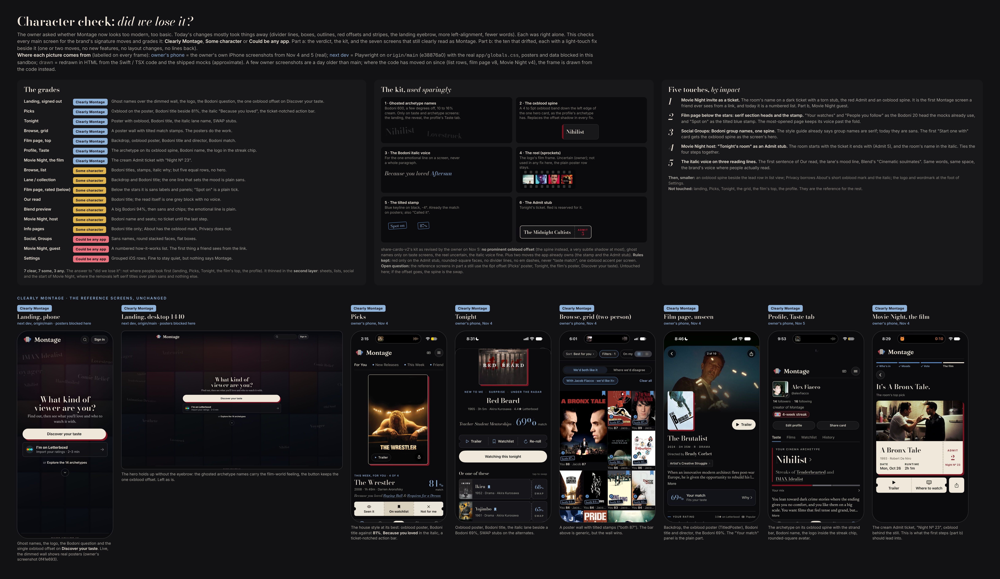
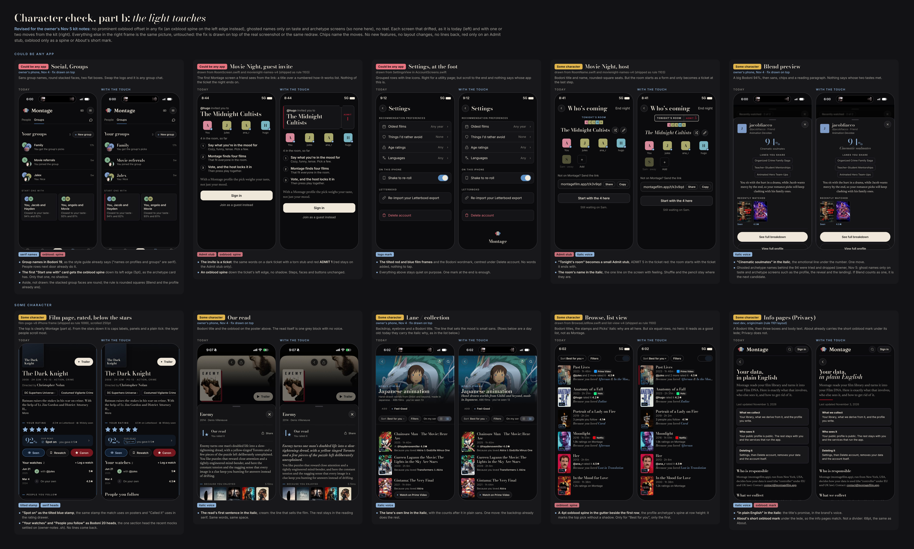

Character check v1 is in two parts (each under 4,500px tall as a PNG): part a (the grades, the kit, the five touches and the seven reference screens) and part b (the ten screens that drifted, each with its light-touch fix). Styles in character-check-v1.css, pictures in character-check-v1/.

